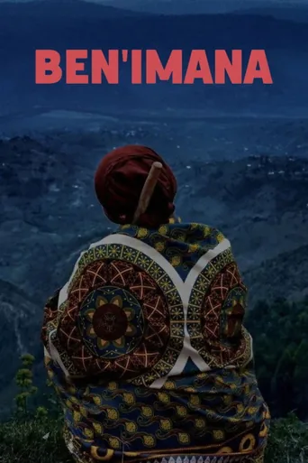

Ben'Imana 2026
Rwanda, 2012. The country is emerging from an era of silence after the 1994 Tutsi genocide, and people's courts are being set up with the aim of bringing justice and reconciliation. Veneranda, a survivor, is convinced of the need for these trials. Despite pressures, she organises discussion sessions between victims and the families of the executioners. Therapy for some, an act of betrayal for others, these testimonial sessions revive and reveal the traumas that each of them try to overcome, in their own way. The wounds of Veneranda's past are exposed again when she learns of her daughter's unexpected pregnancy and the identity of the father. Veneranda has to face her own contradictions and the dark parts of her past.
Открыть в каталогеДанные и постеры принадлежат их правообладателям. Этот продукт использует TMDB API, но не одобрен и не сертифицирован TMDB.